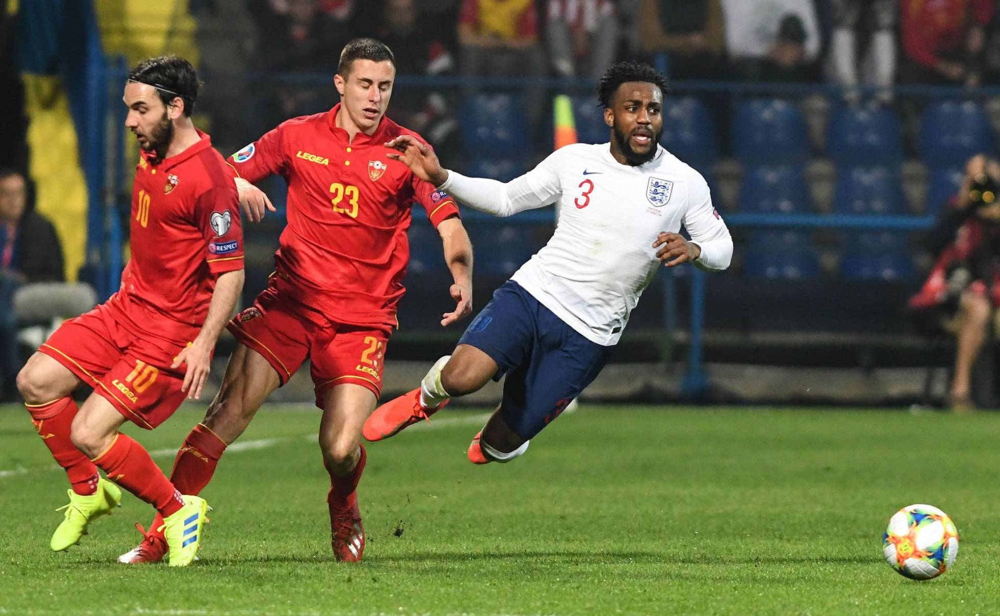

La UEFA abre expediente a Montenegro por actos racistas.
El partido de Inglaterra en Montenegro el lunes sirvió para prolongar el momento dulce de los británicos, que encadenan goleadas y buen juego. Pero el 1-5 se vio empañado por los cánticos racistas de los aficionados balcánicos hacia Danny Rose. Gareth Southgate, seleccionador inglés, denunció el hecho tras el encuentro: “Escuché insultos racistas a Danny cuando él se metía a los vestuarios al finalizar el partido. No tengo ninguna duda de que vamos a informar a la UEFA de ello”

El organismo del fútbol europeo confirmó ayer la apertura de un procedimiento disciplinario a Montenegro por el comportamiento racista de su público, además de por el lanzamiento de objetos, encendido de bengalas y otras infracciones de las normas de seguridad.
El incidente racista se originó en los minutos de descuento, cuando se formó una pequeña tangana en la que se vio involucrado Rose, que acabó siendo amonestado con tarjeta amarilla. A continuación se empezaron a escuchar cánticos y sonidos racistas provenientes de la grada del estadio de Podgorica.
La organización Fútbol Contra el Racismo (FARE, en sus siglas en inglés) también solicitó a la UEFA que actúe “firmemente” contra los actos racistas. FARE, una entidad independiente, tenía observadores en las gradas y enviará un informe donde aclara que tanto Rose como Sterling, ambos jugadores negros de Inglaterra, fueron objeto de insultos y de cánticos que imitaban el sonido del mono.
La federación de Montenegro, por su parte, prometió dureza contra los posibles culpables, a los que quiere identificar y prohibir su entrada en los próximos partidos de su selección. “No hay sitio para comportamientos así en una sociedad multicultural y multiétnica sociedad como la nuestra”, sostuvo en un comunicado la federación.